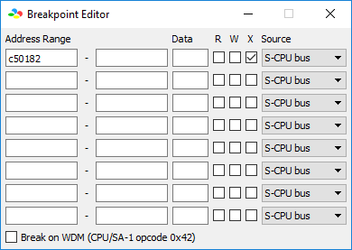
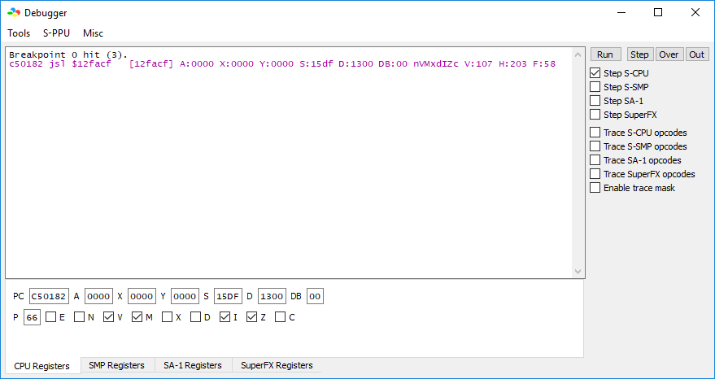
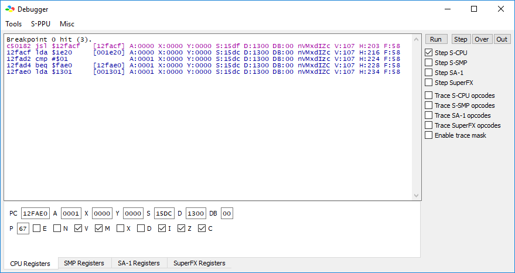
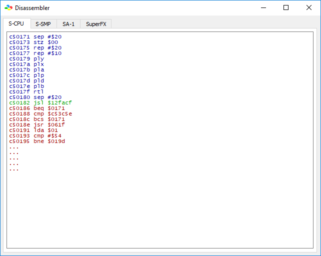
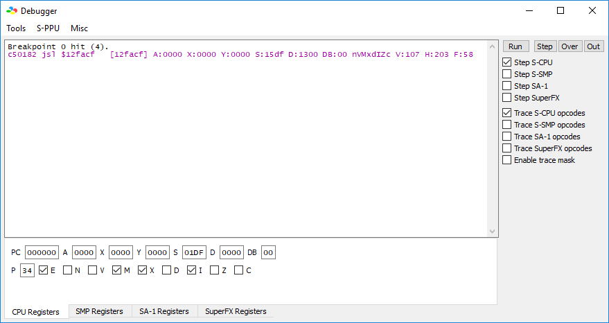
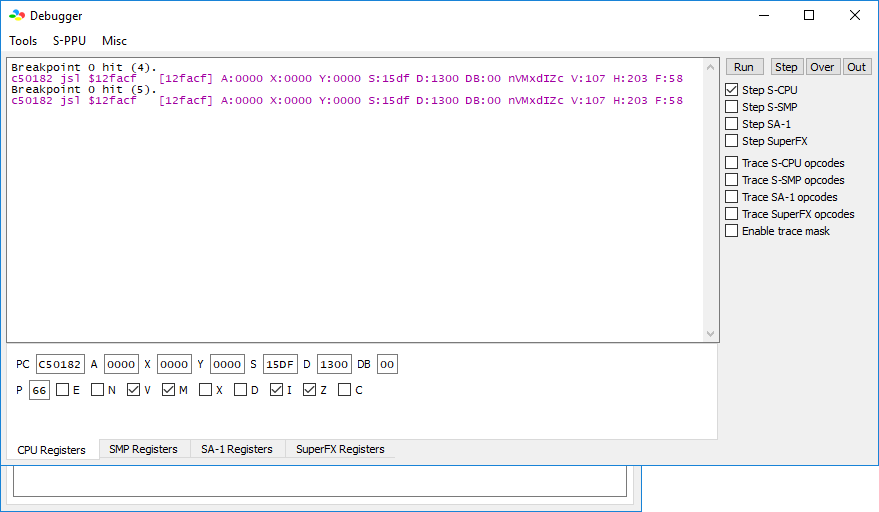
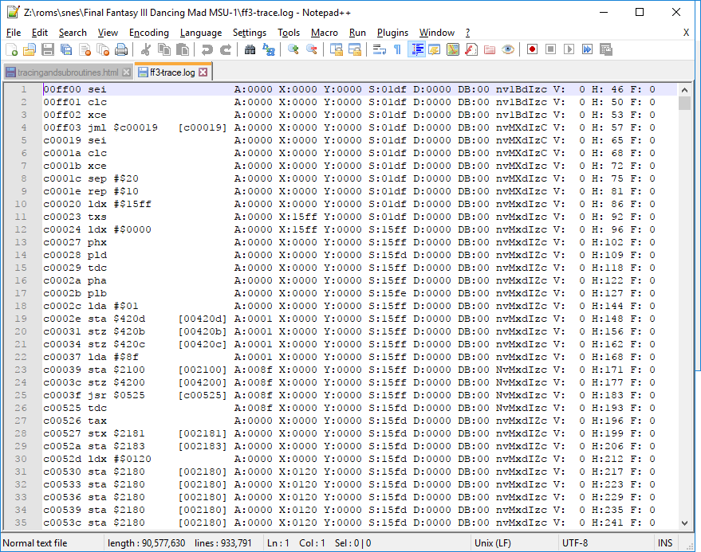

This document has been created to attempt to answer a side question posed by edale2 on 20171216 in this issue on the Dancing Mad MSU-1 romhack GitHub. To be specific, this document has been created to answer the question "Can a debugger be used to trace where in the ROM a change to RAM is coming from?"
Some of the information contained herein may be silly, the wrong way to go about things, or false. This is because I am not at all an expert at this, having started working with assembly language shortly before starting this project. Caveat lector, let the reader beware.
First, to understand the question being asked we must understand that on the SNES, like most ROM cartridge based game systems of the era, the ROM is directly mapped into portions of the SNES's RAM, following a specific mapping scheme decided early in development of the game in question (these mapping schemes are called LoROM and HiROM, the details of which can be read here. Then, we must understand a simple, powerful set of instructions* executed by the SNES CPU. These instructions are 'jsr'/'jsl' and 'rts'/'rtl'. These instructions, whose names can be described as acronyms, stand for "Jump to SubRoutine"/"Jump to Subroutine: Long" and "ReTurn from Subroutine"/"ReTurn from subroutine: Long" respectively. Lastly, we must understand three components of the bsnes-plus debugger we will be using. As this is the meat of the process, I will be describing each part in detail below. These parts are the "Breakpoint Editor", the "Disassembler", and the "Trace S-CPU opcodes" checkbox in the main debugger window.
Disclaimer: I have not followed this guide, at least in the amount of depth we're about to cover, especially in terms of tracing whole subroutines, in the process of doing this mod. I plan to as part of trying to figure out the fading issue. I find reading through a long list of instructions on a CPU difficult for two reasons. One: Tedium, two: losing my place due to said tedium and the terseness of the code.
Pictures will be provided to help guide you, this being the purpose of setting up this guide as an HTML file instead of a gist.
To start off, open the debugger from the menu item Tools->Debugger, then from within that window, open the Breakpoint Editor with Tools->Breakpoint Editor. This is the somewhat easy part, and something I've used a lot in my debugging of both my own code and in my investigations of the code within the game.
Breakpoints are used to tell the debugger "Stop the program here and let me do some things before you continue." You can set breakpoints on many different things. For example, you can set breakpoints on writing to a certain address in RAM; on reading from a certain address in RAM; on executing a certain instruction in RAM or, more importantly (because ROM is mapped into RAM), rom; on writing or reading a certain value from RAM; or even on reading or writing a certain value to a certain address in RAM. This is accomplished by filling in the fields in the breakpoint editor, leaving empty those you do not need, and ticking the checkboxes of the types of access you want to break on.
For an example, I will set a breakpoint on "executing" a specific position in ROM, in this case, a position that, in the MSU-1 romhack, is overwritten from the original code and used to jump into my code. This is a common use of the 'jsl' instruction in ROM hacks: Moving from a certain, heavily population bank of ROM to a different, empty part of ROM, giving one room to work, while allowing one to return back to where we started from easily.
In this image, I have set a breakpoint on Executing (this is the X checkbox) address 182 of bank 5 of the ROM, mapped in this case to bank C5 in RAM. You can split addresses in your head generally as BB:RRRR where B are banks and R are addresses within banks. As I do not want to break on a range of instructions, I have not filled out the second box. As I am not looking for a certain value (meaningless afaict during an Execute breakpoint), I have not filled in the third box. Instruction 182, after modifications done by my, is 'jsl TrackLoader', where TrackLoader is a label within my code, within bank 18 of the ROM, in the roughly 1.5kB section start at address FA72. You will not see this label as part of walking through it in the debugger, as such labels are a convenience for the programmer that are lost when code is assembled. This is part of what makes reading the instructions from the CPU challenging and tedious.
Regardless, having now set this breakpoint I can hit "Run" in the main debugger window, making sure "Step S-CPU" is checked. The game will run until the asked for address in the ROM is executed, which on start of FF6 should not take long in this case, as the game shortly after start first requests silence and then the opening to be played. Once the breakpoint is hit, the debugger window will automatically show up, and it will show you the instruction you asked it to break on in purple, like so:
This is our 'jsl' instruction mentioned earlier. It is jumping to RAM bank 12 (mapped to ROM bank 18), address FACF, which is our 'TrackLoader' label, and the beginning of my MSU-1 track loading subroutine. This address, the address being jumped to, may be subject to change as instructions are moved around while I code. The 'c5:0182' address on the other hand will not change except when dealing with different versions of the FF6 ROM (other than the US V1.0 we're targeting) which may place their SPC track loading code in different places.
One can now hit the "Step" button in the main debugger window to follow each instruction in the CPU, one by one. This looks like this, after hitting the step button four times:
These are the instructions after the breakpoint we asked it to stop on. The purpose of these instructions are not important for this guide, but in the interests of completeness I will explain that these instructions load a value previously stored into working RAM at address 00:1e20, which my code may have previously used to store a 1 or a 0 depending on whether the MSU-1 has been previously detected to exist. It loads the value, comparing that value against the literal value 1. If the value is 1, it branches (moves) to address FAE0 within the same bank of ROM, continuing execution from there. In this case, the instructions starting from FAE0 contain the rest of the track loading code. If it were not true, execution would continue with a set of (not shown here) instructions designed to test for the existence of the MSU-1, store 1 in the section of RAM indicated if it is there, and then continue from there into the code starting at FAE0. The last instruction shown, part of the code after that branch, loads the track the routine in the FF6 ROM is asking us to play from the RAM address 1301, for further comparing and processing.
This is how one sets and uses a breakpoint. Now, with that bit covered, we can move on to ways to see large sections of code around that breakpoint. For this, we need the help of the disassembler and the "trace" function.
First some caveats. Tracing the SNES S-CPU will slow down your emulator considerably. In my case, turning on tracing of the SNES S-CPU slows bsnes-plus down to a measily 24FPS from 60FPS. This is because we are taking every instruction that is run on the SNES CPU and outputting it to a log file. Also, for this reason, turning Trace on for "long" periods of time (due to the speed of the SNES CPU this is really on the order of tens of seconds if not less) will create an extremely large file, often too large to be directly loaded in a text editor. As an example, when testing out the function to help myself write this guide, I created a log file two whole GBs in length simply by allowing Trace to run uninterrupted for a period not more than 20 seconds or so during the title sequence. Notepad and Notepad++ (the latter being my preferred text editor) refuse to open such a large file, for good reason: Loading large files into a text editor generally involves loading the entire file into memory, and it's rare that people want 2GB of their RAM tied up in reading a text file.
Reading the disassembly from the Disassembler on the other hand will not slow down the CPU but will only show you instructions shortly before and after the instruction you are currently looking at. So first, lets look at the disassembler. In the following screenshot I have opened the Disassembler with Tools->Disassembler from the debugger window, after having set and triggered the breakpoint at c5:0182 mentioned in the previous section.
This shows the "neighborhood" of the instruction we have broken on, in RAM. This 'neighborhood' is in terms of locations in RAM, not necessarily in terms of what has just been executed or what will be executed. To add to possible confusion, this will also show areas of ROM containing data to be loaded as instructions, as the CPU and thus the disassembler do not inherently know the difference between data and code. That said, we can see here a number of instructions starting at address c5:0171, continuing to c5:0182, our subroutine jump that we are breaking on, and continuing from there into a set of instructions that will be executed after the subroutine returns. I will not go into what these instructions are doing as some of them are complicated and all of them are outside the scope of this guide. If you are curious, reading this will show you a list of valid instructions on the SNES CPU and a short description of what they do, and reading this will give you the knowledge necessary to make sense of that.
In any case, as stated, this shows us what is 'around' the code being executed. Why is this important? Because the question posed in the issue will require you to trace backwards from one subroutine to another, possibly to another from there, until you get to the part of ROM important to what you are looking to investigate and/or change.
However, since you may want/need to look at areas of the ROM longer than the area directly before and after a breakpoint or an instruction stepped into from that breakpoint, you may need to use the "Trace" functionality of the debugger. This is the bit that I warned you earlier will slow down your emulator.
I don't currently have a reason to do this other than for an example, but in the interests of example, I will trace the set of instructions between one call of c5:0182 and another, or until sufficient time goes by as to make me worried that the file is growing too large for me to open it and show you its contents, whichever comes first :P.
First, having been stopped by the breakpoint after resetting the ROM, I check the Trace S-CPU opcodes checkbox in the main debugger window, like so.
I then hit "Run", waiting for it to break again. It having hit the breakpoint again, I uncheck this box to make sure I don't accidentally add more to the trace log than I need, and to tell it to close the log file so that I can read it. You do not necessarily have to be breaking on the same breakpoint twice. You can break on two completely different reads/writes/executes/whatever by setting multiple breakpoints in the breakpoint window.
Then, I check the directory in which my ROM is contained. In that directory, there will be a new file called romname-trace.log where romname is the filename of the ROM. In my case, and for many default Dancing Mad installs, this will be ff3-trace.log. As this file is a whopping 88MB just from having waited the few seconds between successive calls to c5:0182, I open this in a text editor that is built to handle large files, in this case Notepad++. Microsoft Windows Notepad will appear to hang for a long period of time if you use it to open such a large file. The result is shown below.
This is an extremely verbose listing of all the instructions that have been executed in between these two breakpoints. I will explain each part of the listing for 00ff03 below. I have chosen this instruction because it contains many parts of the trace which are optional.
First is the address within RAM (again, not the address within ROM, ROM addresses are mapped into RAM using the mapping mentioned earlier.). In the case of the first instruction on the list this is address 00:ff00, or address ff00 within bank 00 of RAM. This is a special area of RAM into which the 'NMI' or "Non Maskable Interrupt" routine is loaded. This routine is called an "Interrupt" because it interrupts whatever the CPU is doing, in this case in order to allow itself to be run once per frame. It is called "Non Maskable" because by design it cannot in any way be avoided. In the case of the instruction we are looking at, this is address 00:ff03
Second, seperated by a single space is the instruction itself, which itself is seperated by a single space from any data assigned to the instruction. In this case, the instruction is 'sei' and it takes no parameters. Lower down in the trace, you can see a 'jml' instruction followed by the parameter '$c00019' (This by the way is an instruction to jump, not as a subroutine (so, without the ability to easily return), to address 0019 of bank c0.
Third, seperated from the instruction and its data by a few spaces to line it up into a neat column, and optional, is an address in square brackets. This is provided for instructions that refer to addresses by 2 or 4 hex digits instead of by 6, to show you the exact address being referred to including the bank. In this case, given the fact the instruction's data refers to 6 hex digits, the value is identical to the parameter. You can see things further down the trace for which this is not the case.
Fourth, seperated by a single space from the bit in square brackets, is a list of registers on the SNES CPU. Most important for most of our work is register 'A', which generally contains the value being mathematically "worked on". 'A' stands for 'accumulator', the register (think, simplified, "a tiny bit of memory that's part of the cpu") used for most operations. 'X' and 'Y' can also be used but are more frequently used for memory segmenting, a complicated topic to do with addressing specific areas of memory. I could not, honestly, tell you from memory what 'S', 'D', or 'DB' are used for except that they are other registers. One of the references already linked above may help with this, specifically this one, if you are curious.
Fifth, next to the registers is a seemingly random collection of letters. These are 'flags' on the processor. These are also explained in the above reference, and are used to signify various states. (edale2: The 'Z' one is relevant to an earlier discussion in this closed issue.)
Lastly, another list of registers. Again, I do not actually know what the 'V' 'H' or 'F' registers do offhand as I have not yet had occasion to use them for anything.
That, then, is how to set a breakpoint, read the disassembler, how to get a trace log, and how to read a line from a trace. Addressing the issue, edale2, to do what you want to do, you will need to look for the 'jsr'/'jsl' and 'rts'/'rtl' instructions and use these to follow the chain of code to find the area of ROM that is doing what you want to investigate. The reason Tracing may (will, likely) be necessary is that for example, bank 'c5' of FF3 seems to mostly contain sound code, and is not the main part of the ROM. Since you are likely looking for 'event' code dealing with Shadow being in the pub in South Figaro, you will be looking for code referencing a completely different bank of ROM. Looking at ROM mappings you have linked before may help you do this, inasmuch as it will point you to what banks/addresses to look out for.
I hope that helps.
- Dylan "Insidious611" Morrison, Lead Developer and Maintainer, Dancing Mad MSU-1 Rom Hack